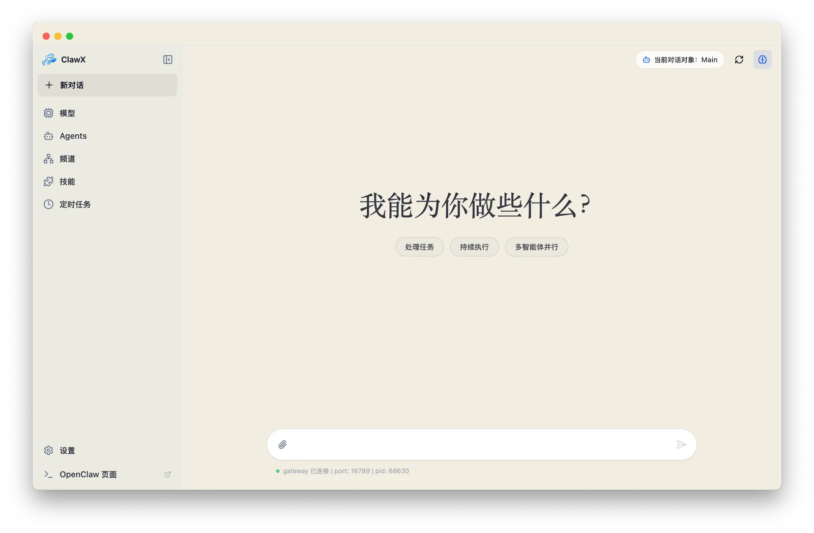
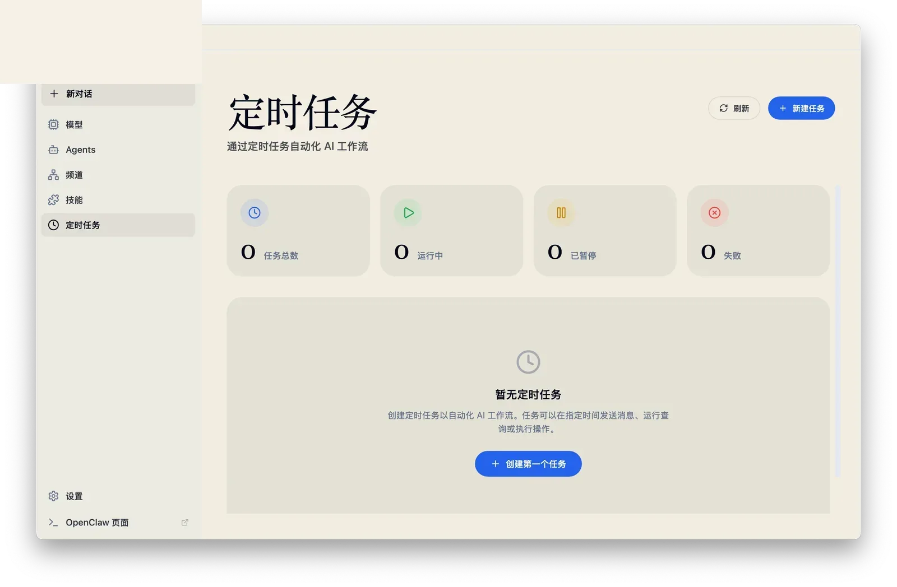
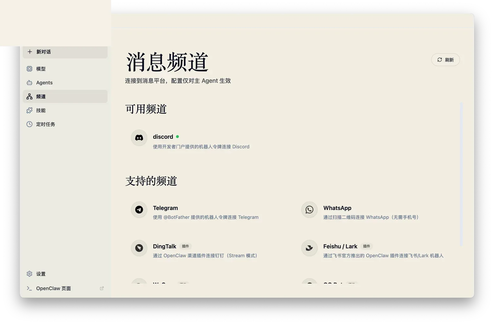
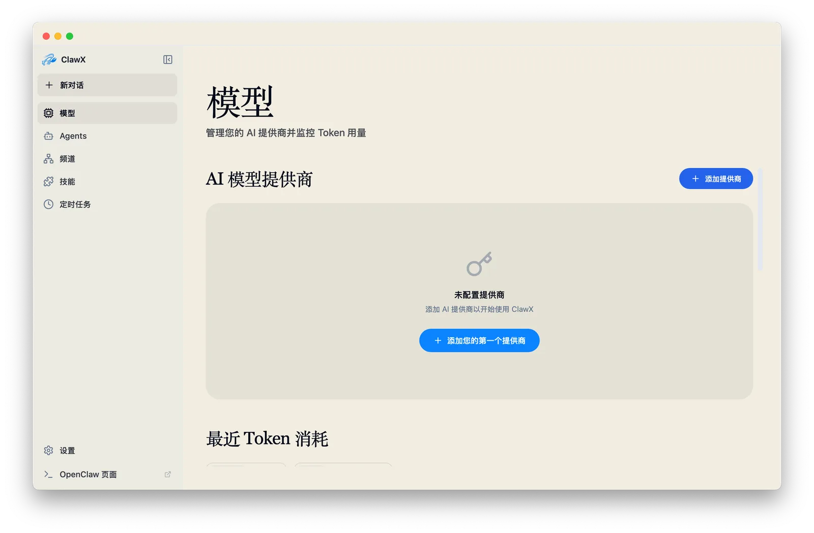

直接和智能体对话
现代聊天界面内置 Markdown、数学公式、智能体路由和隔离工作区。

OpenClaw 智能体，不必困在终端里
RongxinAI 将 OpenClaw 变成一个精致的桌面控制台，统一管理模型提供商、技能、消息渠道、定时任务和本地模型工作流。运行时留在本机，体验更接近现代软件。
RongxinAI 保留 OpenClaw 的完整能力，同时用清晰的工作流、即时校验和持久化界面状态，替代分散的配置文件和终端上下文切换。
现代聊天界面内置 Markdown、数学公式、智能体路由和隔离工作区。
通过可视化表单创建周期任务、投递目标和渠道通知，不再手写 JSON。
浏览内置和已发现技能，查看真实目录，并保持托管技能目录同步。
在同一界面管理 Telegram、微信、Discord 等渠道工作流和账号绑定。
配置模型提供商、校验凭证、管理 Ollama、导入 GGUF 文件并运行本地推理。



应用接管运维层：进程生命周期、模型提供商检查、渠道连接、运行时目录、会话历史和首次启动配置。
选择语言、连接模型提供商、启用技能，并在首次对话前完成运行时验证。
支持 OpenAI、Anthropic、Google、Moonshot、Qwen、OpenRouter、自定义端点和本地 Ollama 模型。
绑定账号、选择默认账号，并让智能体投递路径保持可见，而不是埋在配置里。
查看 Gateway 状态、运行 OpenClaw Doctor，并在应用内访问高级开发工具。
RongxinAI 使用 Electron Store 保存本地应用状态，并通过系统原生钥匙串保存模型提供商凭证。后端调用由桌面宿主层代理，渲染进程不负责传输策略。
Mac, Windows, Linux
从 Release 安装包开始，或克隆仓库并在本地运行 Vite + Electron 开发服务。
不是。RongxinAI 是构建在 OpenClaw 之上的桌面界面，它内置并管理运行时，让用户通过 GUI 操作智能体。
使用云端模型时需要。RongxinAI 会帮助你配置提供商，并把凭证保存到系统原生钥匙串里；同时也支持本地 Ollama 工作流。
可以。核心流程都是可视化的：初始化、模型提供商校验、聊天、技能、渠道、定时任务和本地模型管理。
是。应用采用 MIT 许可证，源代码托管在 GitHub。